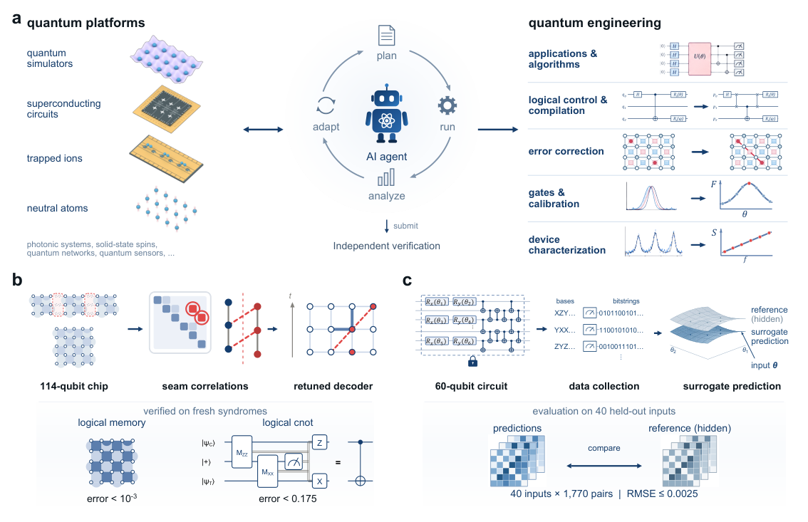

Double-quantum control and AC magnetometry in hBN
How two microwave tones enable DQ sensing, from spin-echo correlation to quantum heterodyne readout, with a 2.57-fold signal-to-noise improvement.
read the note
⟨ψ| blog
Research notes on quantum sensing and AI for quantum engineering.
How two microwave tones enable DQ sensing, from spin-echo correlation to quantum heterodyne readout, with a 2.57-fold signal-to-noise improvement.
read the note
How we test AI agents on quantum engineering tasks, check their experimental evidence, and measure what they can reliably complete.
read the note